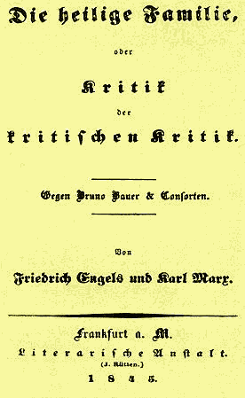

| "When I visited Marx in Paris in the summer of 1844, our complete agreement in all theoretical fields became evident and our joint work dates from that time." |
| Frederick Engels |
Written: between September and November 1844;
First Published: The book was first published in February 1845, Frankfurt am Main. The work was never translated into English in either man's lifetime;
Translated: This 1956 English translation is by Richard Dixon and Clement Dutts and is taken from the 1845 German edition;
Transcribed for the MEIA by Peter Byrne, 1997. Andy Blunden has continued the transcribing from Chapter VI onwards and made slight modifications to the mark-up to blend the two jobs;
Source: MECW Volume 4, Progress Publishers, Moscow 1975.
During Engels' short stay in Paris in 1844, Marx suggested the two of them should write a critique of the rage of their day, the Young Hegelians. In the doing was born the first joint writing project between the two men -- and a life-long association that would change the world.
At the end of August, 1844, Engels passed through Paris, en route to his employment in Manchester, England, from visiting his family in Barmen (Germany). During 10 days in the French capital, he met Marx (for the second time).
After talking, they began drawing up plans for a book about the Young Hegelian trend of thought very popular in academic circles. Agreeing to co-author the Foreword, they divided up the other sections. Engels finished his assigned chapters before leaving Paris. Marx had the larger share of work, and he completed it by the end of November 1844. (Marx would draw from his Economic and Philosophical Manuscripts, on which he'd been working the spring and summer of 1844.)
The foremost title line — "The Holy Family" — was added at the suggestion of the book publisher Lowenthal. It's a sarcastic reference to the Bauer brothers and their supporters.
The book made something of a splash in the newspapers. One paper noted, that it expressed socialist views since it criticised the "inadequacy of any half-measures directed at eliminating the social ailments of our time." The conservative press immediately recognized the radical elements inherent in its many arguments. One paper wrote that, in The Holy Family, "every line preaches revolt... against the state, the church, the family, legality, religion and property." It also noted that "prominence is given to the most radical and the most open communism, and this is all the more dangerous as Mr. Marx cannot be denied either extremely broad knowledge or the ability to make use of the polemical arsenal of Hegel's logic, what is customarily called 'iron logic.'"
Lenin would later claim this work laid the foundations for what would develop into a scientific revolutionary materialist socialism.
Bruno Bauer attempted to rebut the book in the article "Charakteristik Ludwig Feuerbachs" — which was published in Wigand's Vierteljahrsschrift, Leipzig 1845. Bauer essentially claimed that Marx and Engels misunderstood what he was really saying. Marx would reply to that article with his own article — published in the journal Gesellschaftsspiegel, Elberfeld, January 1846. And the matter was also discussed in chapter 2 of The German Ideology.
See also Progress Publishers Endnotes.

Foreword, by Frederick Engels
Chapter 1: "Critical Criticism in the Form of as Master-Bookbinder", or Critical Criticism as Herr Reichardt (by Engels)
Chapter 2: "Critical Critcism" as a "Mill-Owner", or Critical Criticism as Herr Jules Faucher (by Engels)
Chapter 3: "The Thoroughness of Critical Criticism", or Critical Criticism as Herr J. (Jungnitz?) (by Engels)
Chapter 4: "Critical Citicism" as the Trnaquility of Knowledge, or "Critical Criticism" as Herr Edgar
1. Flora Tristan's Union Ouvriere (by Engels)
2. Beraud on Prostitutes (by Engels)
3. Marx and Engels in Paris in 1844Love (by Marx)
4. Proudhon (by Marx)
Chapter 5: "Critical Criticism" as a Mystery-Monger, or "Critical Criticism" as Herr Szeliga (by Marx)
1. The Mystery of Degeneracy in Civilisation
2. The Mystery of Speculative Construction
3. The Mystery of Educated Society
4. The Mystery of Probity and Piety
5. Mystery, a Mockery
6. Turtle-Dove (Rigolette)
7. The World System of the Mysteries of Paris
Chapter 6: Absolute Critical Criticism, or Critical Criticism as Herr Bruno
1. Absolute Criticism's First Campaign (by Marx)
a. "Spirit" and "Mass"
b. The Jewish Question No. 1
c. Socialism and Philosophy
2. Absolute Cricitism's Second Campaign
a. "Criticism" and Feuerbach (by Engels)
b. The Jewish Question No. 2 (by Marx)
3. Absolute Criticism's Third Campaign (by Marx)
a. Its "political" Past
b. The Jewish Question No. 3
c. Critical Battle Against the French Revolution
d. Critical Battle Against French Materialism
e. Final Defeat of Socialism
f. Philosophy of Self-Consciousness
Chapter 7: Critical Criticism's Correspondence
1. The Critical Mass (by Marx)
2. The “Un-Critical Mass” and “Critical Criticism”
a. The “Obdurate Mass” and the “Unsatisfied Mass” (by Marx)
b. The “Soft-Hearted” Mass “Pining for Redemption” (by Engels)
c. Grace Bestowed on the Mass (by Marx)
3. The Un-Critically Critical Mass (by Marx)
Chapter 8: The Earthly Course and Transfiguration of “Critical Criticism”, or “Critical Criticism” as Rudolph, Prince of Geroldstein (by Marx)
1. Critical Transformation of a Butcher into a Dog
2. Revelation of the Mystery of Critical Religion
3. Revelation of the Mysteries of Law
4. Revealed Mystery of the “Standpoint”
5. Revelation of Mystery of the Utilisation of Human Impulses
6. Revelation of Mystery of Emancipation of Women
7. Revelation of Political Economic Mysteries
8. Rudolph: Revealed Mystery of All Mysteries
Chapter 9: The Critical Last Judgement and Historical Epilogue (by Marx)
Excerpt: England and Materialist Philosophy.